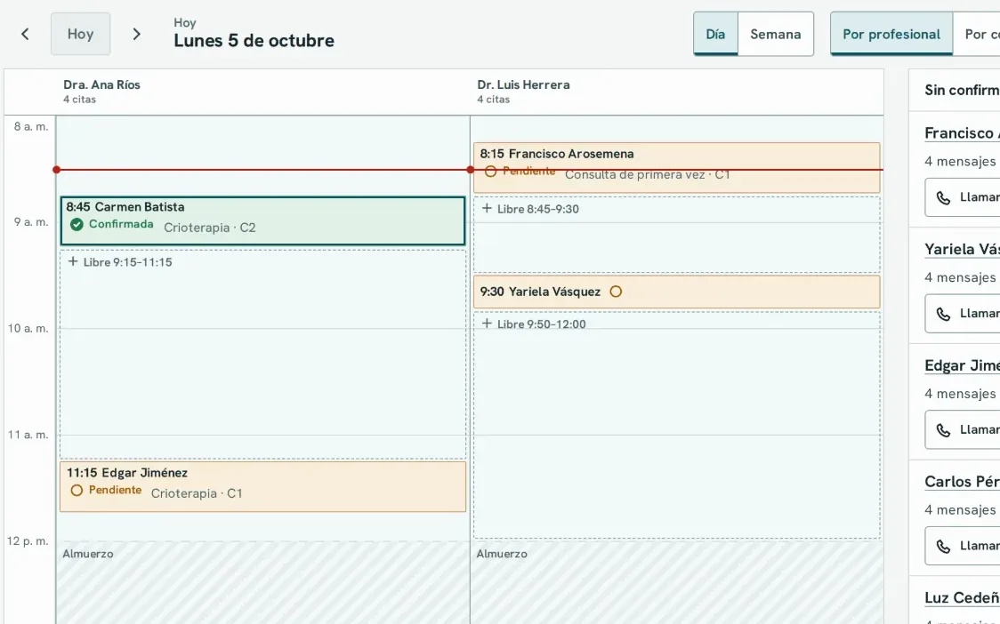
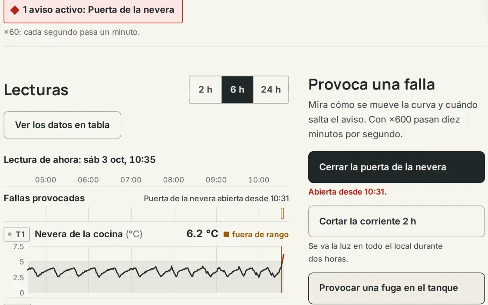
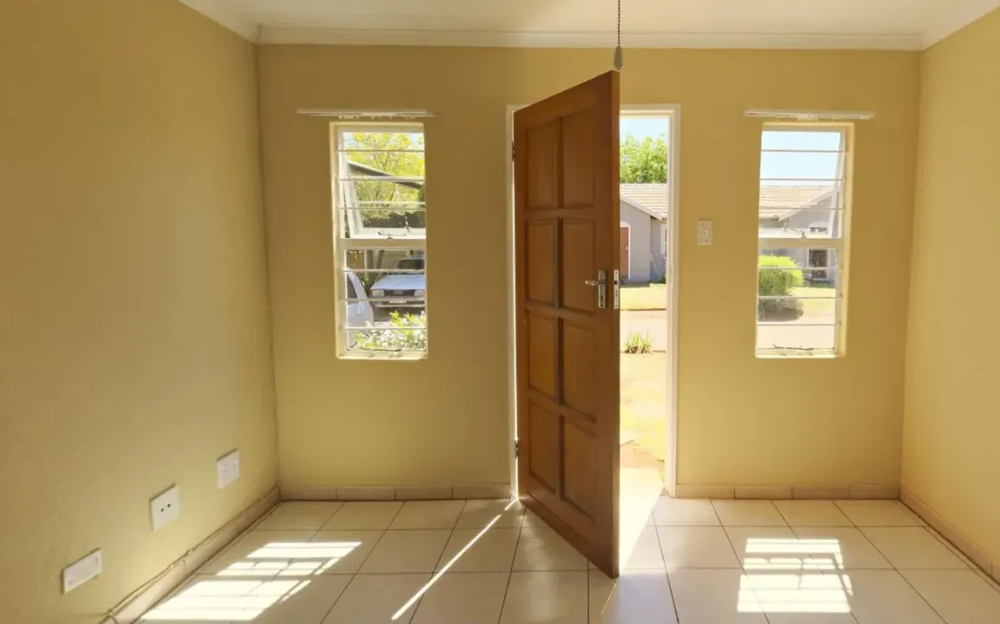

Cinco demos que puedes encender
Elige una y préndela: corre la demo de verdad, con un negocio de ejemplo. Cada una dice qué parte es simulada.
La agenda de un consultorio que recuerda la cita e insiste hasta que el paciente responde, y el calendario de unas cabañas.

La carta de un restaurante con un QR por mesa: pides desde el teléfono, la comanda llega a la cocina y la cuenta se divide.
Mesa 7
Precios con ITBMS incluido. No hay cargos adicionales.
Entradas
La cámara cuenta a quien cruza una línea, lleva el aforo y arma un mapa de calor. El video no sale de tu equipo.
El video no sale de tu equipo: solo se guardan los conteos.
Neveras, luz, tanque y puertas de un restaurante, con avisos cuando algo se sale de lo normal.

Fotos esféricas de interiores unidas: miras alrededor y pasas de un ambiente a otro.

Cómo funciona en cada tipo de negocio
Elige un negocio y mira, paso a paso, qué hace el sistema y qué mensajes te llegan.
Un pedido de punta a punta en una fonda de ejemplo, y el aviso que llega antes de que se dañe la mercancía.
- El cliente escanea el QR de la mesa y pide desde su teléfono, sin esperar al mesero.
- La comanda sale en la pantalla de la cocina, sin papelitos.
- Paga con Yappy o tarjeta desde la misma mesa, y puede dividir la cuenta.
- Si algo se sale de lo normal, te avisa: la nevera, la luz, el tanque.
- Al cerrar, el resumen del día te llega al teléfono.
Un día en un minisúper de ejemplo: quién entra, qué se vende, qué se acaba y si la caja cuadra.
- La cámara cuenta quién entra y te dice a qué hora llega más gente.
- Cobras con Yappy o tarjeta y la factura electrónica sale sola.
- El inventario se descuenta con cada venta y te dice qué pedir.
- Si la caja no cuadra, te avisa al cerrar, no a fin de mes.
- Al cerrar, el resumen del día te llega al teléfono.
Cómo llega una cita en una clínica de ejemplo, y lo que pasa para que el paciente no falte.
- El paciente agenda en línea a cualquier hora; el asistente con IA le ofrece los espacios libres.
- Le recordamos la cita 2 días y 1 día antes.
- Confirma con un toque, o libera la hora para alguien de la lista de espera.
- Si alguien no confirma, te avisa a tiempo para llamarlo.
- Al cerrar, el resumen del día te llega al teléfono.
Una reserva directa en unas cabañas de ejemplo, de punta a punta y sin pagarle comisión a nadie.
- El huésped reserva en tu página y paga con Yappy o tarjeta, sin comisión.
- El calendario se cruza con Booking y Airbnb para que no haya dos reservas el mismo día.
- Le llega el código de la cerradura, válido solo para sus fechas.
- Si algo falla, te avisa: el agua, la luz, una puerta abierta.
- Cada lunes, el resumen de la semana te llega al teléfono.
Un día en una bodega de ejemplo: motores, tanques, camiones y puertas, medidos todo el día.
- Los sensores miden motores y tanques todo el día, sin que nadie vaya a mirar.
- El GPS sigue cada camión y avisa cuando entrega.
- Cada entrada queda registrada con hora y persona.
- Si algo se sale de lo normal, te avisa antes de que se dañe.
- Al cerrar, el resumen del día te llega al teléfono.
- Mesa 4 pidió: 2 patacones con ceviche y 1 chicha de piña. B/. 9.50
- Cocina: la orden de la mesa 4 está lista.
- Mesa 4 pagó B/. 10.17 con Yappy (ITBMS incluido) y dejó B/. 1.00 de propina.
- Aviso: la nevera 2 subió a 8.9 °C. La puerta lleva 6 minutos abierta.
- Resumen de hoy63 personas entraron41 pedidos por QRB/. 612.40 en ventas1 aviso de la nevera, resuelto
- Entraron 96 personas en la mañana. La hora pico de ayer fue de 5 a 7 p. m.
- Venta 0458: B/. 23.75 con tarjeta. Factura electrónica enviada.
- Arroz de 5 lb: quedan 6. Al ritmo de hoy se acaba el jueves.
- Aviso: la caja 1 cerró con B/. 12.00 menos de lo vendido.
- Resumen de hoy214 personas entraron96 ventasB/. 1,840.50 vendidos3 productos por pedir
- Nueva cita agendada por el asistente: martes 10:30 a. m., consulta de control.
- Recordatorio enviado a los 18 pacientes de mañana.
- 16 confirmaron. 1 canceló y su hora ya se ofreció a la lista de espera.
- Aviso: 2 pacientes de mañana no han confirmado su cita.
- Resumen de hoy18 citas17 atendidas1 reprogramadaInasistencias del mes: 4 %
- Reserva directa: cabaña 2, del 21 al 23. B/. 240 pagados con Yappy.
- Calendario al día: las fechas quedaron bloqueadas en Booking y Airbnb.
- Código de la cabaña 2 enviado al huésped. El huésped abrió a las 3:12 p. m.
- Aviso: el tanque de agua bajó al 20 %.
- Resumen de la semana3 reservas directasB/. 72 ahorrados en comisionesFin de semana al 90 %
- Tanque 1 al 62 %. Motor 3: vibración normal.
- El camión 2 salió rumbo a David con el pedido 2220.
- 13 personas entraron antes de las 8 a. m.
- Aviso: el motor 3 vibra fuera de lo normal. Conviene revisarlo hoy.
- Resumen de hoy4 entregas hechas0 paradas imprevistasTanque 1 al 58 %
Equipos que conectamos
Además del software, nos encargamos del equipo y le enseñamos a tu personal a usarlo.
- Placa con QR y NFCen cada mesa
- Pantalla de cocinaen la pared de la cocina
- Kiosco de autopedidojunto al mostrador
- Cámara que cuentasobre la puerta
- Sensor de temperaturadentro de la nevera
- Cerradura con códigoen cada cabaña
- Lector de accesoen la entrada
- GPS del vehículoen cada camión o moto
- Compramos el equipo después de que apruebas la propuesta, no antes.
- Si ya tienes equipo que sirve (cámaras, una tableta, un televisor), lo usamos.
- El dominio y los QR quedan a nombre de tu negocio.